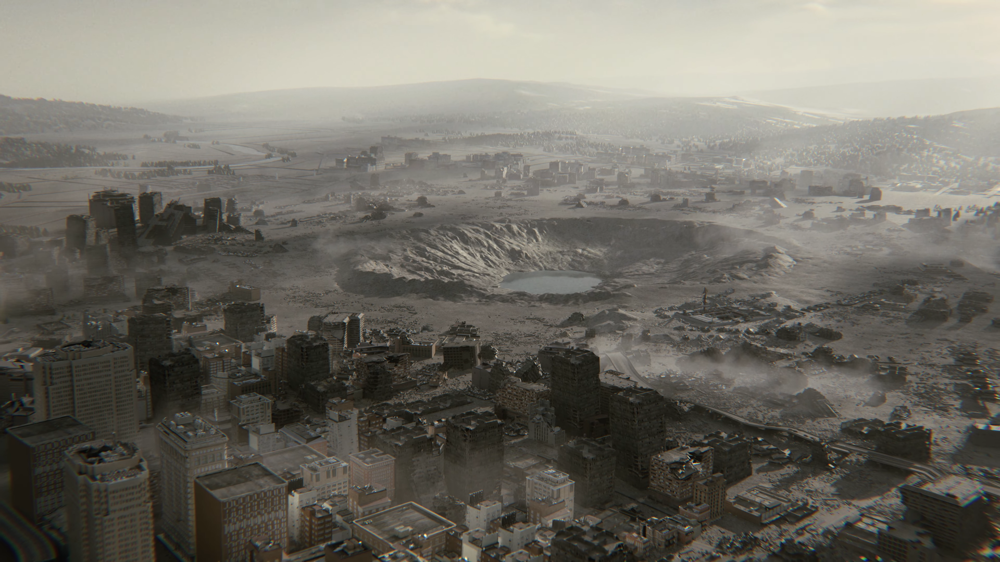

Kompanija Capcom je objavila prvi zvanični trailer za Resident Evil 9, koji je odmah podigao hype među fanovima. U videu se vidi znatno mračnija atmosfera nego u prethodnim delovima, uz naglasak na survival horror elemente. Prikazani su novi neprijatelji – mutirana bića koja deluju brže i inteligentnije nego klasični zombiji.
Prema najnovijim informacijama, u Resident Evil 9 vraća se Leon S. Kennedy, jedan od najomiljenijih likova u serijalu. Njegova priča bi mogla biti centralni deo radnje, a očekuje se i povratak klasične borbe za preživljavanje koja je obeležila starije igre.

Radnja igre smeštena je u misteriozni, napušteni grad koji krije brojne tajne. Igrači će istraživati razrušene zgrade, podzemne tunele i napuštene laboratorije povezane sa širenjem virusa. Atmosfera je klaustrofobična i puna napetosti, sa konstantnim osećajem opasnosti.